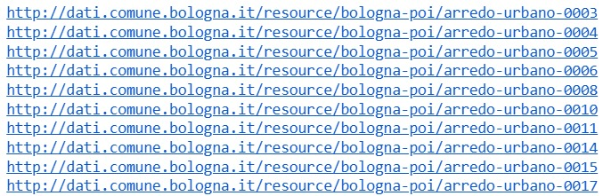
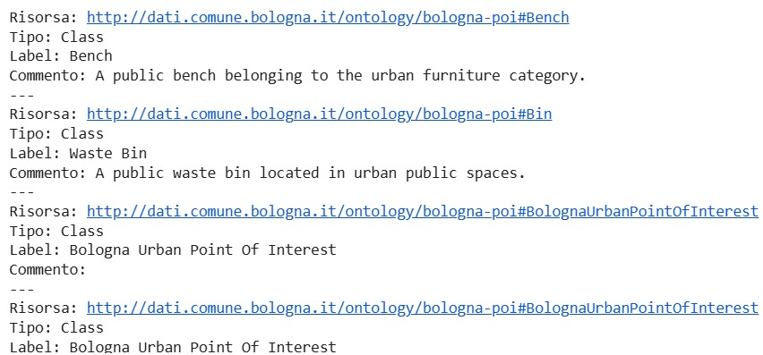
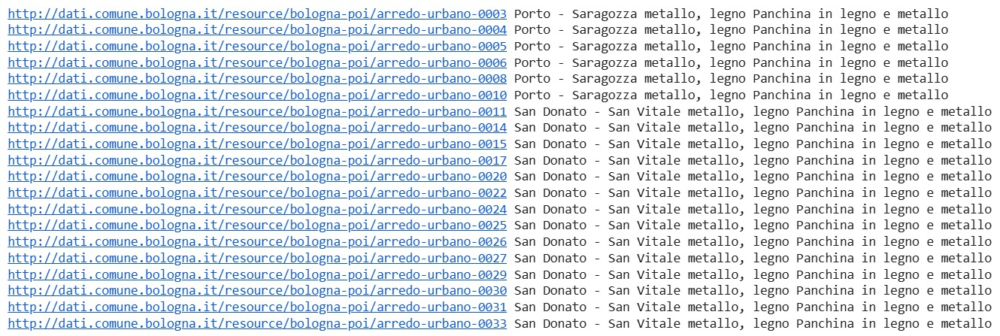
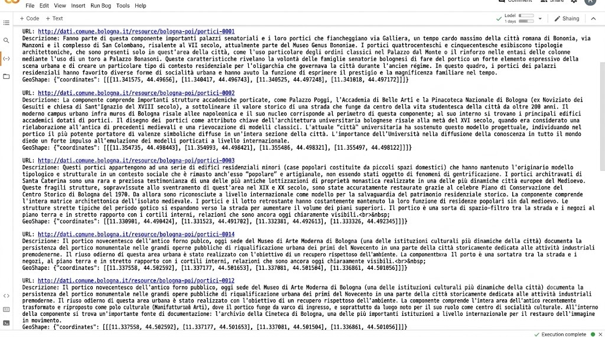
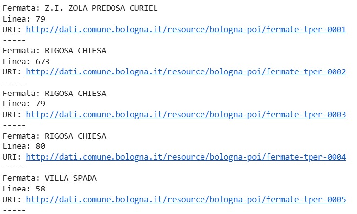

Validazione e interrogazione del Knowledge Graph
Dopo la generazione delle triple RDF a partire dal dataset integrato dei punti di interesse urbani di Bologna, le istanze sono state importate nell'ontologia locale per costruire un unico Knowledge Graph contenente sia lo schema ontologico sia i dati.
La validazione del grafo è stata effettuata mediante il reasoner HermiT, che ha consentito di verificare la consistenza semantica delle classi, delle proprietà e delle triple generate. Una volta completata la fase di validazione, il Knowledge Graph è stato interrogato tramite query SPARQL utilizzando Google Colab e la libreria Python rdflib.
Le interrogazioni hanno permesso di esplorare sia la struttura dell'ontologia sia le istanze generate a partire dai dati originali, verificando la corretta rappresentazione di elementi quali fermate TPER, arredo urbano, portici, parcheggi e servizi pubblici.
Il notebook completo contenente le query SPARQL e i relativi risultati è disponibile al seguente link:
Di seguito sono riportati alcuni esempi di query SPARQL eseguite sul Knowledge Graph di Bologna, con i relativi risultati visualizzati come screenshot.
1. Query SPARQL per trovare l'ontologia (Istanze di bo:Bench)
Esecuzione della query tramite la libreria rdflib per estrarre le prime 10 istanze della classe panchine (Bench).
query = """
PREFIX bo: <http://dati.comune.bologna.it/ontology/bologna-poi#>
SELECT ?bench
WHERE {
?bench a bo:Bench .
}
LIMIT 10
"""
for row in g.query(query):
print(row.bench)Esempio di Output:

2. Query SPARQL per la ricerca di concetti rilevanti per Bologna
Esecuzione della query tramite la libreria rdflib per esplorare le classi, le object property e le datatype property presenti nell'ontologia locale.
query = """
PREFIX owl: <http://www.w3.org/2002/07/owl#>
PREFIX rdfs: <http://www.w3.org/2000/01/rdf-schema#>
PREFIX dct: <http://purl.org/dc/terms/>
SELECT DISTINCT ?resource ?type ?label ?comment ?description
WHERE {
{
?resource a owl:Class .
BIND("Class" AS ?type)
}
UNION
{
?resource a owl:ObjectProperty .
BIND("ObjectProperty" AS ?type)
}
UNION
{
?resource a owl:DatatypeProperty .
BIND("DatatypeProperty" AS ?type)
}
OPTIONAL { ?resource rdfs:label ?label . }
OPTIONAL { ?resource rdfs:comment ?comment . }
OPTIONAL { ?resource dct:description ?description . }
FILTER(STRSTARTS(STR(?resource), "http://dati.comune.bologna.it/ontology/bologna-poi#"))
}
ORDER BY ?type ?resource
LIMIT 100
"""
for row in g.query(query):
print("Risorsa:", row.resource)
print("Tipo:", row.type)
print("Label:", row.label)
print("Commento:", row.comment)
print("---")Esempio di Output:

3. Query SPARQL sulle panchine
Esecuzione della query tramite rdflib per estrarre informazioni dettagliate sulle panchine (istanze di bo:Bench), includendo il quartiere, il materiale e la descrizione.
query = """
PREFIX bo: <http://dati.comune.bologna.it/ontology/bologna-poi#>
PREFIX l0: <https://w3id.org/italia/onto/l0/>
SELECT ?bench ?district ?material ?description
WHERE {
?bench a bo:Bench ;
bo:hasDistrict ?district ;
bo:hasMaterial ?material ;
l0:description ?description .
}
LIMIT 20
"""
for row in g.query(query):
print(row.bench, row.district, row.material, row.description)Esempio di Output:

4. Query SPARQL per i portici
Esecuzione della query tramite rdflib per estrarre le istanze dei portici (bo:Portico), includendo la descrizione testuale e la complessa geometria spaziale associata (GeoShape).
query = """
PREFIX bo: <http://dati.comune.bologna.it/ontology/bologna-poi#>
PREFIX l0: <https://w3id.org/italia/onto/l0/>
SELECT ?portico ?description ?shape
WHERE {
?portico a bo:Portico .
OPTIONAL { ?portico l0:description ?description . }
OPTIONAL { ?portico bo:hasGeoShape ?shape . }
}
LIMIT 20
"""
for row in g.query(query):
print("Portico:", row.portico)
print("Descrizione:", row.description)
print("GeoShape:", str(row.shape)[:120] if row.shape else "")
print("---")Esempio di Output:

*Nota: Questa immagine è stata generata con l'ausilio dell'AI a scopo illustrativo, in quanto l'output testuale originale (in particolare le coordinate del GeoShape) risultava troppo lungo orizzontalmente per una corretta visualizzazione nella pagina.
5. Query SPARQL per tutte le fermate TPER con nome e linea
Esecuzione della query tramite rdflib per estrarre le fermate degli autobus TPER (istanze di bo:BusStop), includendo il nome della fermata e la linea corrispondente.
query = """
PREFIX bo: <http://dati.comune.bologna.it/ontology/bologna-poi#>
SELECT ?stop ?name ?line
WHERE {
?stop a bo:BusStop ;
bo:hasBusStopName ?name ;
bo:hasBusLine ?line .
}
LIMIT 20
"""
for row in g.query(query):
print("Fermata:", row.name)
print("Linea:", row.line)
print("URI:", row.stop)
print("-----")Esempio di Output:

Questa fase ha confermato la correttezza del Knowledge Graph generato e la sua effettiva interrogabilità attraverso SPARQL, completando il processo di costruzione e validazione del grafo di conoscenza.